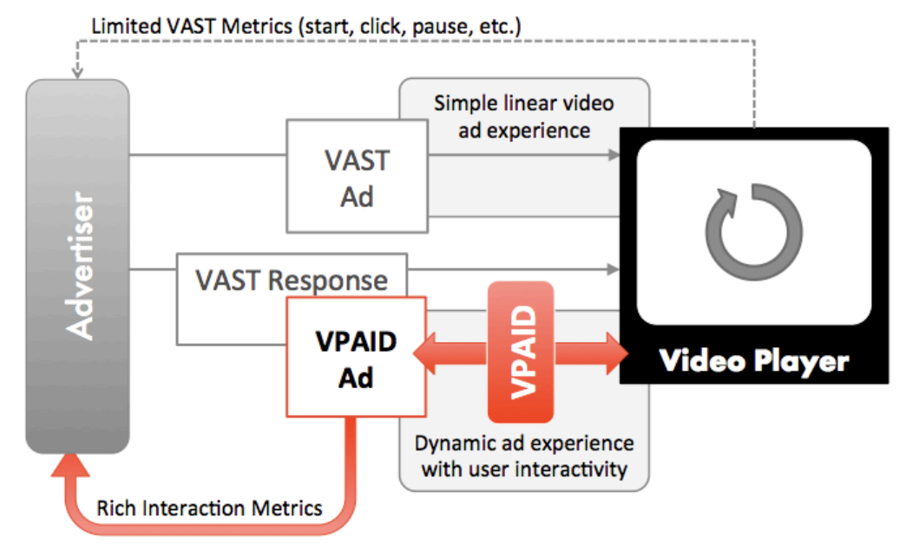

1. Executive Summary
The SIVIC standard is intended to address the original mandate of the VPAID spec: to establish a common communication protocol between video players and ad units that allows a single “executable ad” (one that requires software logic to be executed as part of ad playback) to be displayed as an enhancement of standard video advertisement, in any compliant video player, with the result that advertisers using VPAID ads can provide rich ad experiences for viewers and collect ad playback and interaction details that are just as rich as the ad experience.
The SIVIC revision is needed specifically to address the following concerns with VPAID:
-
Publisher control: compatibility with running the interactive code in parallel to the video rather than having the code manage the video delivery, incorporating the following:
-
VAST 4 style delivery (interactive code delivered separately from the media file)
-
Compatibility with server-side ad insertion, including live streams
-
Compatibility with the need to pre-cache at least the video asset on mobile
-
-
Security: compatibility with running in a “protected”/safe iframe and/or being passed a proxy video object by the publisher
-
Clarity of purpose: Movement of verification and viewability codebase to a separate codebase, either client-resident in the case of the OM SDK or a separate call to a verification script in VAST 4.1
-
Clarity of purpose, security, performance: Unintended usage of VPAID that is disruptive to the user experience and/or publisher operations (specifically client-side arbitration, but other scenarios may exist)
By specifying a separation of the video asset from the codebase, VAST 4.0 + has already done some of the work required to resolve the issues above. The SIVIC spec is intended to close the gaps for the purpose of enabling and reporting on rich (interactive and dynamic) video ad experiences. Viewability and verification will now be handled in separate standard efforts.
Additionally, the new standard should support all reasonably well-adopted ad formats currently available using VPAID.
2. Intended Audience
Anyone involved in digital video advertising can benefit from being familiar with this specification, however implementation details are targeted toward the developers of executable video ads and of video players intended to support interactive and/or dynamic video ads enabled by the spec. Specifically, video software engineers and video product managers should use this document as a guide when implementing technology designed to support SIVIC.
3. Introduction
3.1. Enabling Advanced Video Advertising
Standard video ads are limited in what they can do and what they can track. They play back linearly from start to finish and support only the tracking provided to the publisher in advance via VAST.
In cases where the player environment is capable of supporting execution of code as part of the video playback experience, that code can be used to present the viewer with an array of interactive and/or dynamic features, commonly including additional video or image galleries, more detailed product information, store or dealer locators, and audience-specific personalized elements.
The SIVIC specification is intended to standardize the communication needed between the ad player and the ad creative itself. SIVIC is similar to the VPAID spec that preceded it in this regard.

the diagram above will need to be revised to account for SSAI and non-SSAI scenarios
3.2. Video Ad Flow
The process of serving an ad is also more or less unchanged from the earlier VPAID specification, with two main exceptions.
-
Access to the video is no longer mediated by the code layer described in this spec, as was the case for VPAID. Pre-caching for mobile and SSAI require direct access to the video and this is reflected in the VAST 4.1 spec, which now separates the video media file from the
InteractiveCreativeFileasset. Removing this parent-child relationship between the code and the video also no longer allows the code to act as a gatekeeper for the video, which led to the exploitation of VPAID for client-side arbitration. -
SIVIC also has to account for the SSAI use case - in this case, the video ad is part of an ongoing video stream delivered by the publisher and the SIVIC code is downloaded and executed on a parallel path to the stream.

the diagram above will need to be revised to account for SSAI and non-SSAI scenarios
3.3. Cross-Platform Support
As was the case with VPAID, and perhaps more so given the additional abstraction provided by including a VideoProxy element, SIVIC is designed to be a cross-platform standard, and should be the preferred standard for enabling advanced video creative on any device capable of supporting the execution of ad-resident code on the device, including desktop, mobile and OTT.
3.4. Scope and Limitation
The most important change in scope between VPAID and the SIVIC specification is that SIVIC is now only intended to be used to support advanced video creative. Verification and viewability are now handled by the Open Measurement spec, and part of the rationale for revising SIVIC is clarifying and narrowing the usage of code by ad vendors to support the publishers’ need for security and performance. Any use of the SIVIC spec to support something other than interactive or dynamic content within the ad unit should be by default considered as counter to the intentions of the spec.
Another out-of-scope consideration for this spec is that there may be cases where the device is not capable or not willing to execute third-party code alongside the video. In these cases an alternate “thin client” solution may need to be provided using VAST or another approach, but it will not be addressed here. An example of advanced creative supported by VAST include end cards executed using VAST companion assets, as well as proprietary ad units developed by several mobile SDKs to support advanced video executions in a manner that is easily pre-cached.
3.5. Market Needs
The VPAID spec that preceded the SIVIC spec was outlined to follow general principles, some of which are generally accepted good design principles (simplicity, portability, consistency) and others of which reinforce at this point relatively well-known aspects of the relationship between the player and the ad (the player is in control, and implements support for the full spec to support a variety of ad units, whereas a given ad unit implements only the aspects of the spec that it needs).
In the hopes of going a bit deeper than the abstract principles underlying the spec in this new revision, instead we reflect below the market needs driving the replacement of VPAID with SIVIC.
-
Publisher needs:
-
Security
-
Performance
-
Low latency
-
Protection of publisher page creative elements from ad code
-
The minimization of errors and playback issues
-
-
Agency/advertiser/ad platform needs:
-
Maximum creative control, without interfering with publisher needs above
-
Access to player-managed capabilities like fullscreen
-
Ability to pass data into the creative
-
A defined interface for communicating with elements outside the player and ad
-
Ability to understand playback environment/device capabilities that may be required for creative execution
-
The ability to correlate the measurement of interactive events with other measurement now happening outside of VPAID (eg viewability and verification)
-
-
Needs of both:
-
Document clarity - we should be careful to minimize any confusion about how to implement a player or recognized ad format
-
Position relative to other standards (VAST, OMID, etc) in any cases of overlap or potential confusion
-
3.6. Primary Use Cases
The standards revisions in this document intend to support scalable, performant interactive video execution in the following cases
-
Server-side ad insertion, with interactive creative operating in parallel to a publisher-controlled video stream
-
Mobile and other bandwidth-constrained scenarios that require pre-loading of assets to enable instant playback
-
Desktop and other playback scenarios currently executed via VPAID, with a reduction in errors, non-standard executions, and performance and security issues. The significant change between VPAID and SIVIC for these scenarios is that video playback control now resides with the publisher player in all cases.
-
In service of all of the above, it is also understood that this version of the SIVIC spec should be interoperable with VAST 4.1.
-
In all cases the understanding is that the playback environment (device and platform) support and permit the execution of code as required by SIVIC.
3.7. Video Player Requirements
The video player must implement ad loading, check for presence of SIVIC, manage video playback, and if present, implement the correct SIVIC version. Recovery mechanisms should also be in place should the ad unit fail to follow specified protocols correctly. For example, if the video player does not receive the AdStopped event from an ad unit after sending a call to stopAd, the video player should be prepared to react appropriately.
§5.3 Ad Completion provides details on error handling and recommended recovery action for specific timeout situations.
3.7.1. Displaying Ad Unit Creative
The video advertising industry expects that an impression has indicated that an ad was viewed by an end user. Therefore, the video player should ensure that no other visual elements from the video player, the webpage, or other ads, display over a video ad that is currently in progress.
Also, since video ad creative are expected to adhere to industry guidelines that include a “Close X” button, the video player should not include its own close button for SIVIC ad units.
3.8. Ad Unit Requirements
If the ad unit implements SIVIC, it must indicate the correct version. The ad unit must implement all methods and properties listed, but can either decline from responding or returning a value that indicates that the method or property is not supported.
The ad unit should never allow uncaught exceptions to be thrown during calls into SIVIC from the video player. See Implementation sections for more specific requirements.
4. API Reference
4.1. Referencing a SIVIC creative from VAST
When a SIVIC creative is referenced from a VAST document, the value for the apiFramework attribute in the InteractiveCreativeFile element must be SIVIC (all caps). This attribute identifies the SIVIC API for the creative. Version information should be handled by the handshakeVersion() method (rather than identified in the VAST file).
Another attribute of the InteractiveCreativeFile is variableDuration which identifies whether the ad always drops when the duration is reached, or if it can potentially extend the duration by pausing the underlying video or delaying the adStopped event after adVideoComplete.
4.2. How to Handle Ad Loading
The player must follow this workflow for loading an ad.
-
Player creates an element for the SIVIC creative to live in. For HTML this must be an iframe. The iframe must overlay the video player. The ad slot must be a div that is inside the iframe. The ad unit should always expect to be rendered in a secure iframe without access to any elements outside the iframe.
-
Player loads the JavaScript for the SIVIC creative in the iframe. Listen for the script’s
onLoadevent and callgetSIVICAdon the iframe window’s global scope to get a reference to the ad. -
Player calls
handshakeVersion()to get the SIVIC API version of the ad (for compatibility) while passing in the highest version it supports itself. -
Players calls
initAd()with parameterscreativeDataandenvData. TheEnvironmentDataobject will contain theslotandvideoProxyfor the ad to render creative elements and control video playback respectively. The ad will load all required assets and elements into the ad slot. The ad will callAdLoadedwhen done loading. -
Player waits for video to start buffering, or for point in stream of video start. Player calls
startAdand wait forAdStarted. IfAdStartedis not immediately fired, the player should assume that there was an error (see §5.2 Error Handling and Timeouts).
need to define the definitions of the ViewMode enum values
When calling initAd(), the player shall provide the following parameters:
-
creativeData: object used for additional initialization data.CreativeDatais used to pass information associated with the creative (sometimes taken from VAST). In a VAST context, the ad unit should pass the value for either theLinearorNonlinearAdParameterelement specified in the VAST document.-
adParameters: ad parameters from VAST, or an empty string if unknown -
adId: the ID of the ad from VAST, or an empty string if unknown -
creativeId: the ID from the creative or an empty string if unknown -
adServingId: Quasi-unique id generated by ad server and passed through all 1st and 3rd party reporting to facilitate the marriage of impression-level data across multiple reporting systems. In VAST 4.1 and later this id is provided in theAdServingIDnode.
-
-
envData: object used for passing implementation-specific runtime variables.EnvironmentDatais used to pass information associated with the publisher playback environment. The object should have the following fields.-
slot: the container where the ad renders. For HTML5, this should be a div. -
videoProxy: an implementation of theVideoProxyinterface given in this spec -
width: indicates the display area width in pixels -
height: indicates the display area height in pixels -
viewMode: indicates the view mode for the video player as defined by the publisher. Must be one of the values of theViewModeenum. -
fullscreenAllowed: primarily used to choose to display or not display a fullscreen option -
variableDurationAllowed: If set to true the player must allow the SIVIC creative to pause player-controlled video playback during the ad. Iffalseit will not (live streaming is a use case). An example use case here is a clickthru overlays, wherevariableDuration(ad requirement) isfalse, butvariableDurationAllowed(publisher capability) can betrueorfalse. It should not be used in any case where disallowing the pause interferes with the ad KPIs (for example if it can interfere with completions, time spent in an interactive component, etc). -
skippableState: indicates whether the ad may be skippable and which party controls the skippability, must be one of theSkippableStateenum values.-
playerHandles: The player will render a skip button and might skip the ad. -
adHandles: The ad may or may not render a skip button. -
notSkippable: The ad cannot be skipped and the SIVIC creative should not render a skip button. This may be common in DAI for live streams.
-
-
siteUrl: indicating the website the ad will play on, for example if the site waswww.xyz.com/videoId, this information would include at leastwww.xyz.com. The player may give more information. Desired for reporting and troubleshooting. -
appId: the id of the app if applicable -
sdkName: the name of an SDK implementing SIVIC creative playback (if applicable) -
sdkVersion: an SDK version (if applicable) -
deviceId: IDFA or AAID would be used primarily for 3rd party tracking of custom events
-
The video file (specified in VAST) will be loaded by the player.
To assist in preloading assets the initAd() function must be called first. The player should call this function early enough before playback so that assets can be displayed as soon as the ad starts.
The ad, however, should not assume that it has any amount of time between the initAd() call and the startAd call. For example a preroll might call startAd immediately after initAd(). Nothing should be displayed by the SIVIC creative until startAd is called.
4.3. How to Handle Ad Playback
The video player is responsible for handling playback of the video as well as tracking video related events. The SIVIC creative on the other hand handles playback of interactive content and internal tracking related to interactivity (custom events, creative impression if desired (recommended)). The SIVIC creative should use the VideoProxy to modify the video stream in any way, and to subscribe to video playback related events.
4.3.1. Ad Pause
If the variableDurationAllowed flag is set to true then the VideoProxy should enable video pause by the SIVIC creative via the pause function. The VideoProxy must respond to pause with the AdPaused event.
When the SIVIC creative would like to resume video playback, it should call the resume function on the VideoProxy. The VideoProxy must respond to resume with the AdPlaying event.
4.3.2. Ad Quartiles and Playback Events
The VideoProxy must dispatch quartiles and playback events.
The SIVIC creative may subscribe to any video playback events dispatched by the VideoProxy (AdVideoStarted, AdImpression, AdFirstQuartile, AdSecondQuartile, AdThirdQuartile, AdVideoComplete)
consider renaming AdSecondQuartile to AdMidpoint to match VPAID
The SIVIC creative at any time may poll the VideoProxy for playhead location relative to the beginning of the ad, which must be accurate and up to date at all times.
how can accurateness be guaranteed across an async secure iframe?
4.3.3. Ad Resizing and Fullscreen
can width / height coordination not be done through the iframe width height, which would not require any API?
The VideoProxy has the resize(width, height) method which changes only the size of the video. The VideoProxy also has setLocation(x, y) which positions the video relative to the top left corner of the ad slot.
The player may resize the ad slot. The player must call resizeAd(width, height, viewMode) any time the ad slot size is changed.
If fullscreenAllowed is true, the SIVIC creative may invoke the fullscreen method. The player must resize only the ad slot to fullscreen (not the video). The SIVIC creative then will resize the video as it sees fit. The player must call resizeAd(width, height, viewMode) on the SIVIC creative with viewMode set to fullscreen and width and height set to the full screen dimensions.
If player goes fullscreen on its own, it must also call resizeAd(width, height, viewMode) on the SIVIC creative with viewMode set to fullscreen and width and height set to the full screen dimensions. It must only resize the ad slot.
should the player not also resize the video slot?
4.3.4. Ad Volume
The volume set on the VideoProxy should be respected by the ad unit when initialized.
4.4. How to Handle Ad End and Unload
There are three cases where an ad has ended:
-
Ad was skipped, either by player or internally by the ad (if the ad contains the skip button). See §4.4.1 Ad Skips.
-
Ad has fired
AdStoppedevent, either in response tostopAdor after ad experience has ended. -
Ad errors out. See §4.4.5 Ad Errors Out.
4.4.1. Ad Skips
Skip Ad Handled by Player
-
The player calls
skipAdon the ad. -
The ad dispatches
AdSkipped. -
The player fires any skip tracking pixels.
-
The ad cleans up and dispatches
AdStopped. -
The player unloads the ad.
Skip Ad Handled by Ad
-
The ad dispatches
AdSkipped. -
The player fires any skip tracking pixels.
-
The ad cleans up and dispatches
AdStopped. -
The player unloads the ad.
the Ad interface currently does not offer any event registration system for the player to register handlers
4.4.2. Ad Ends Before Video Completion
This scenario applies when the ad chooses to signal the player to kill it, typically at the prompting of the viewer. A good example would be a survey that allows the viewer to skip immediately to content when completed.
-
The ad cleans up and dispatches
AdStopped. -
The player unloads the ad.
4.4.3. Ad Extends Beyond Video Completion
This scenario is only possible when the variableDurationAllowed flag is set to true. Video duration must only be extended in response to user interaction.
-
User interacts at any point during playback of the video, triggering extended ad portion.
-
Ad dispatches
AdDurationChangeevent, and exposes the new duration of the ad via theadDurationproperty (if the extended version isxseconds thenadDurationwould bevideoProxy.duration + x). -
The
VideoProxydispatchesAdVideoCompleteevent. -
The ad enters its extended phase.
-
The ad dispatches
AdStoppedwhen extended phase is finished.
clarify the value of the adDuration property as the current text does not seem to make much sense
4.4.4. Ad Completes at Video Completion
When an ad finishes at the same time as its video.
-
Proxy video element raises the
AdVideoCompleteevent upon video completion. -
Player calls
stopAd -
Ad dispatches
AdStoppedevent after it cleans up.
4.4.5. Ad Errors Out
The SIVIC creative or the player may terminate the ad unit with an error at any time. If the SIVIC creative indicates an error, the player should try to stop ad unit playback. This might not be possible in server side stitched ads.
The player should terminate the ad with an error if the version returned by handshakeVersion() is not supported.
The player may error out if the ad does not respond with AdLoaded and AdStarted in a reasonable amount of time.
When an ad errors out it must follow these steps.
-
The
Adwill dispatchAdError(errorCode, errorMessage) -
The
AddispatchesAdStoppedwhen it is done cleaning up.
4.4.6. Additional Notes
The player may call stopAd at any time. The creative should respond with AdStopped after finishing its ad end logic. The player should allow 1 second between calling stopAd and receiving AdStopped. The implementer of the SDK should take into consideration that dropping a SIVIC ad unit before it has dispatched AdStopped may result in discrepancies, and that calling stopAd before the ad experience has ended (which is AFTER the optional lean-in phase) could harm the overall ad experience.
The SIVIC creative may also dispatch AdStopped at any time, signaling to the player that the ad has finished and unloaded. Any further interaction with the SIVIC creative after AdStopped may not result in the desired outcome. The same is true for AdError.
5. Protocol Details
5.1. Objects
5.1.1. Entry Point
partial interface mixin Window {
[SameObject] Ad getSIVICAd();
};
5.1.2. Ad Interface
interfaceAd{ stringhandshakeVersion(stringsupportedVersion); voidinitAd(CreativeDatacreativeData, EnvironmentDataenvData); voidstartAd(); voidstopAd(); voidskipAd(); voidresizeAd(floatwidth, floatheight, ViewModeviewMode); readonly attribute floatadWidth; readonly attribute floatadHeight; readonly attribute floatadDuration; };
handshakeVersion()-
Negotiates version support between the player and ad. The player passes
supportedVersionset to the highest version it supports.handshakeVersionreturns the version it supports.
consider passing supportedVersion on the getSIVICAd() function call, so the ad can respond with an object that matches the requested API
adDuration-
The full duration of the ad experience, including video and extended features
5.1.3. VideoProxy Interface
interfaceVideoProxy{ voidremoveEventListener(stringeventName, anyeventHandler); voidaddEventListener(stringeventName, anyeventHandler); voidpause(); voidfullscreen(); voidresume(); voidresize(floatwidth, floatheight); voidsetLocation(floatx, floaty); readonly attribute floatduration; readonly attribute floatcurrentTime; readonly attribute floatplaybackRate; readonly attribute booleanended; readonly attribute booleanpaused; readonly attribute booleanmuted; readonly attribute floatvolume; };
5.1.4. Creative Data
dictionaryCreativeData{ required stringadParameters; required stringadId; required stringcreativeId; required stringadServingId; };
5.1.5. Environment Data
dictionaryEnvironmentData{ required DOMElementslot; required VideoProxyvideoProxy; required floatwidth; required floatheight; required ViewModeviewMode; required booleanfullscreenAllowed; required booleanvariableDurationAllowed; required SkippableStateskippableState; stringsiteUrl; stringappId; stringsdkName; stringsdkVersion; stringdeviceId; }; enumViewMode{"normal","thumbnail","fullscreen"}; enumSkippableState{"playerHandles","adHandles","notSkippable"};
5.2. Error Handling and Timeouts
5.3. Ad Completion
6. Security
7. Examples
8. Language-Specific Implementation Details
9. Terminology
- SIVIC VAST
-
The VAST document that contains the SIVIC ad unit components.
- SIVIC Ad Unit
-
The SIVIC ad video and the SIVIC ad creative.
- SIVIC Video
-
The SIVIC ad video component if it’s a progressively downloaded video file.
- SIVIC Video Stream
-
The SIVIC ad video component if it’s SSAI video.
- SIVIC Live Video Stream
-
The SIVIC ad video component if live streaming video.
- SIVIC Creative
-
The SIVIC ad creative component (html doc and assets) that overlays the SIVIC ad video.
- SIVIC Secondary Video
-
Video assets that are loaded as part of the SIVIC creative and not the primary video.
- Content Video
-
Any reference to video that is NOT a component or asset of the ad unit.